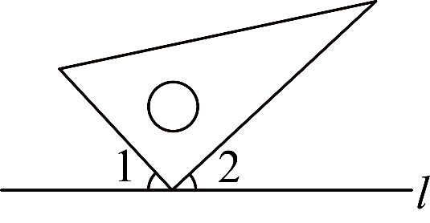
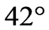
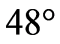
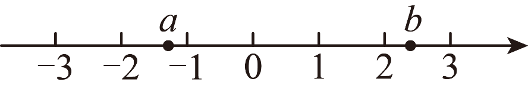
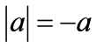
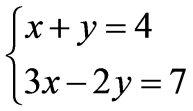
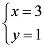
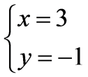
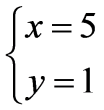
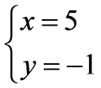

2026年北京市中考数学试卷 · 选择题 第1、2、3、4、5题
第题均有四个选项，符合题意的选项只有一个．
1. 下列图形中，是中心对称图形的是（ ）
A. B. C. D.
2. 如图，三角尺的直角顶点在直线l上．若，则的大小为（ ）

A. B.

C. D. 
3. 实数，在数轴上的对应点的位置如图所示，下列结论中正确的是（ ）

A. B. C.

D. 4. 一个不透明的袋子中仅有个球，其中有个白球、个黄球，其余都是红球，这个球除颜色外无其他差别．从袋子中随机摸出一个球，摸出的球是红球的概率是（ ）
A. B. C. D.
5. 方程组

的解为（ ）A.

B. 
C. 
D. 